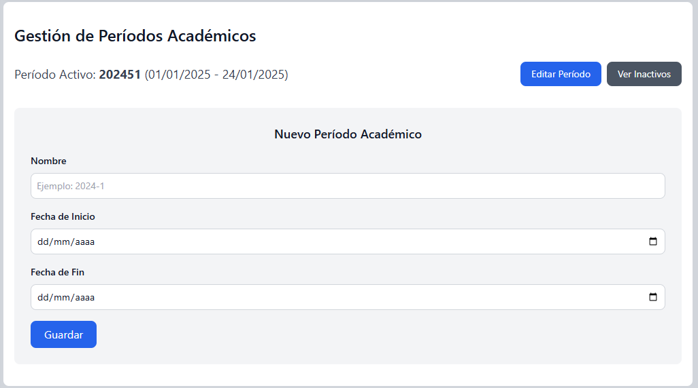
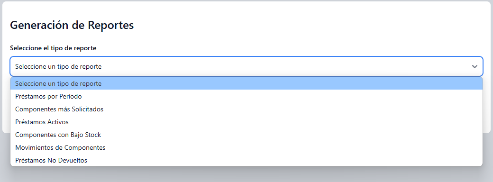
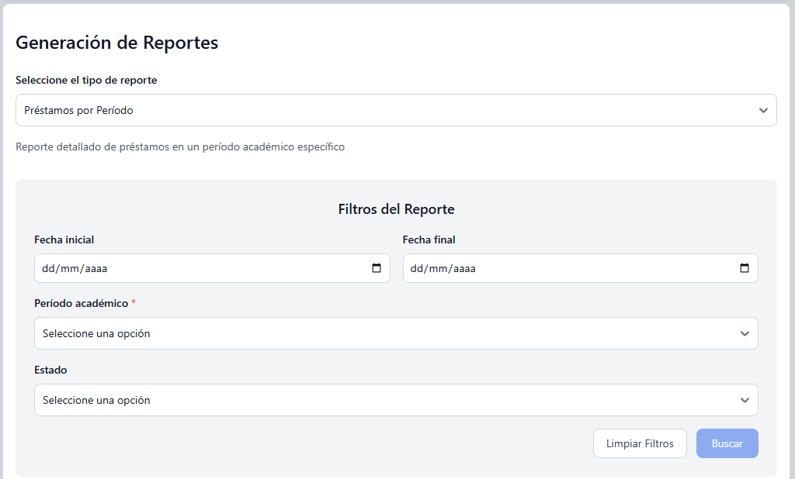
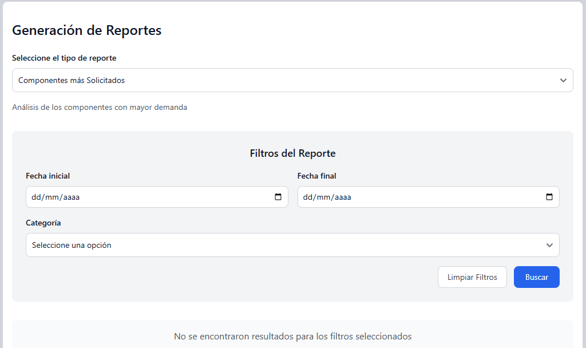
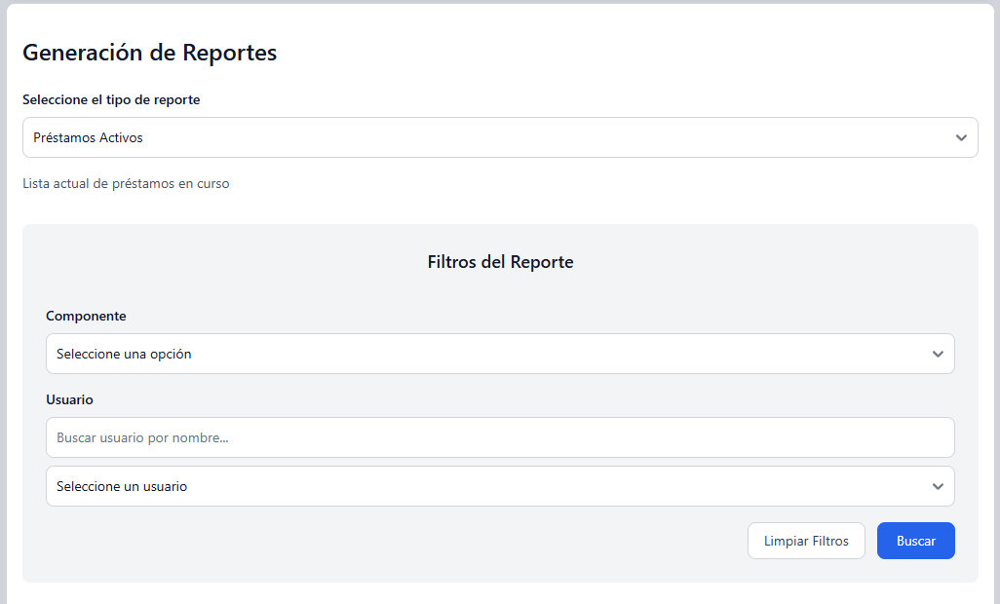
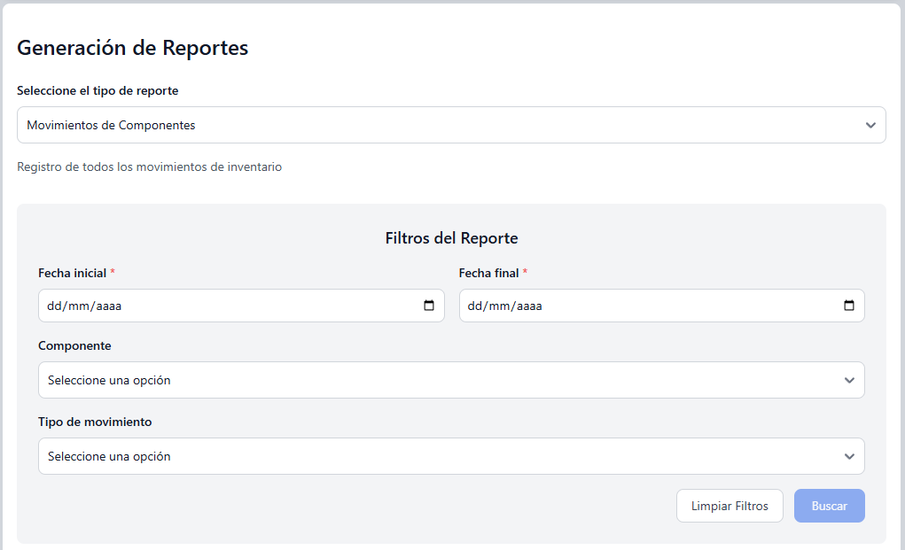
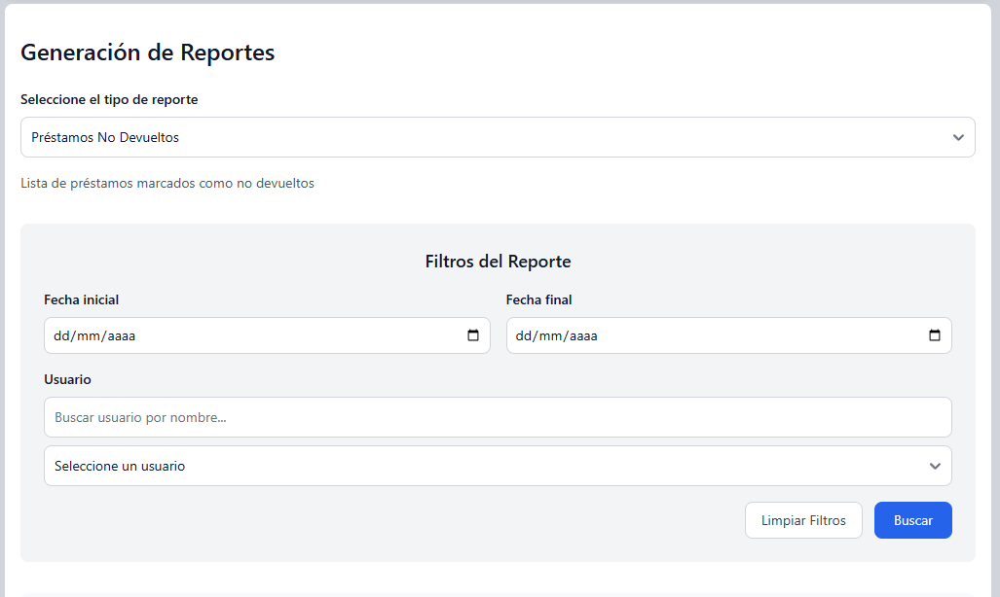
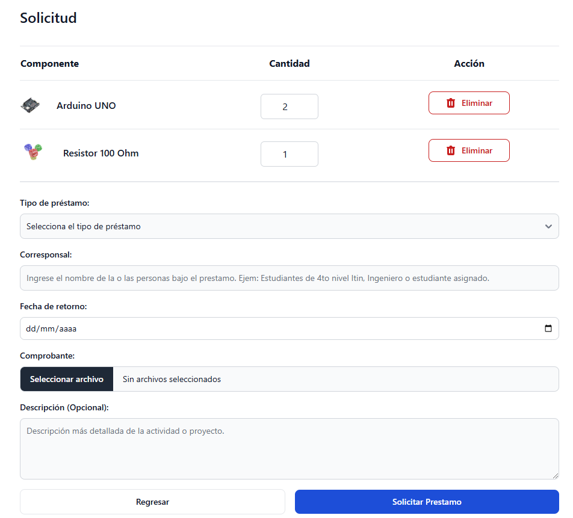

La interfaz de inicio de sesión permite a los usuarios autenticarse en el sistema utilizando sus credenciales institucionales. Características principales:
La interfaz de registro permite a nuevos usuarios crear una cuenta institucional en el sistema. El proceso incluye:
El sistema proporciona un mecanismo seguro para recuperar el acceso a la cuenta. El proceso consiste en:
El panel principal del administrador proporciona acceso a todas las funcionalidades de gestión del sistema. Desde aquí puede:
En esta sección puede administrar el inventario de componentes electrónicos:
En esta sección puede administrar los períodos académicos del sistema:

Para los períodos inactivos, se muestra una tabla especial:
La interfaz de gestión de solicitudes permite:
El sistema ofrece diversos tipos de reportes para un control integral del inventario:
Permite generar informes detallados de los préstamos realizados en un período académico específico. Incluye filtros por rango de fechas, período académico y estado de los préstamos. Los datos se muestran en formato tabular y pueden exportarse a PDF.
Analiza la demanda de los componentes electrónicos del inventario, permitiendo filtrar por rango de fechas y categoría. Esta información es vital para identificar los elementos más requeridos y optimizar la gestión del inventario.
Proporciona una vista de todos los préstamos que se encuentran actualmente en curso. Incluye opciones de filtrado por componente específico y usuario, facilitando el seguimiento de los componentes prestados y sus responsables.

Identifica los componentes que requieren reabastecimiento en el inventario, con la opción de filtrar por categoría. Es una herramienta esencial para la gestión preventiva del inventario, ayudando a mantener niveles óptimos de stock.
Muestra un registro detallado de todos los cambios en el inventario, con opciones para filtrar por rango de fechas, componente específico y tipo de movimiento (ingreso o egreso). Esencial para mantener la trazabilidad y auditar los cambios en el inventario.
Genera un listado de todos los componentes marcados como no retornados al sistema. Incluye filtros por rango de fechas y usuario específico, facilitando el seguimiento de componentes pendientes de devolución y la gestión de responsabilidades.
Como usuario del sistema, puede:
En el catálogo, usted puede:
En esta sección puede:
Al realizar una nueva solicitud:
